Use Case
During the development phase the ops team is usually a bit more flexible with opening the ports without any restriction to the IP address which can access that particular port. This makes easy for the development team to debug/profile the application with ease.
But, as they move the same applications to the production, they need to tighten up things a little bit, for ex. restricting access to only a few ports and from a few IP address. If this is not done, hackers can try to exploit this and cause a lot of damage to the company.
This is where this use case comes into the picture. We should be able to capture the network data within a VPC by enabling the VPC flow logs and analysing the same using Elasticsearch and Kibana. We can figure out what all the ports opened for a particular application and what is not required. Also, we can check if any of the network packets are being rejected by the Security Group or NACL, which will help us to understand any network intrusion attempts into the VPC by the hackers or bots.
This use case is not about improving the customer experience as in the previous use cases, but more about security from a network perspective to make the application and the data with it more secure. The below flow depicts the data flow within the different AWS services.
AWS Services: VPC, CloudWatch, Lambda, Elastisearch and Kibana.
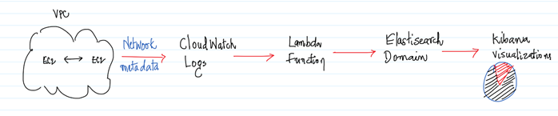
-- Go to the Elastisearch Management and click on “Create a new domain”.
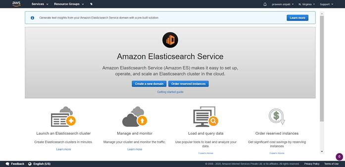
-- For the “Deployment type” select “Development and testing”. This creates a
non-HA Elastisearch domain which is OK for trying out Elastisearch. Click on
Next.
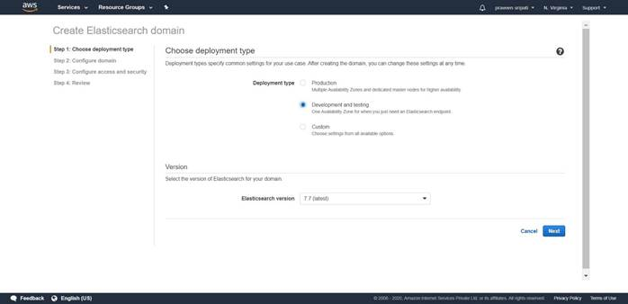
-- For the domain name enter “my-demo-es-domain”. Select t2.small.elastisearch for the Instance type and number of nodes as 1. This configuration falls in the AWS free tier. Go with the default options and click on Next.
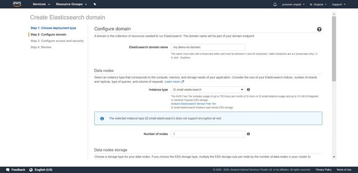
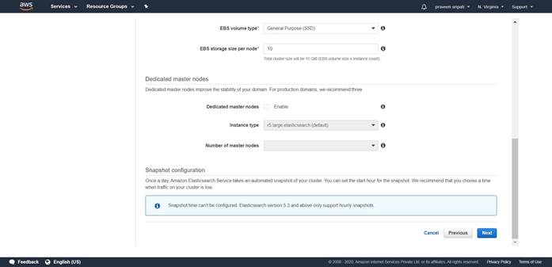
-- Under “Configure access and security” select “Public access”.
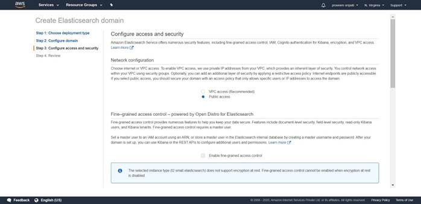
-- Go to Google and search for “whats my ip” and note it down.
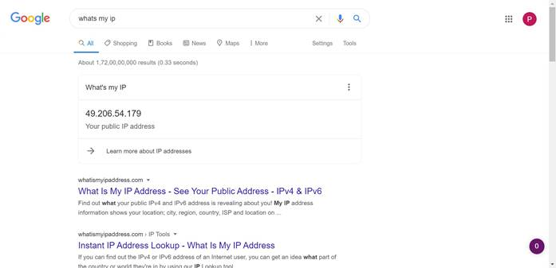
-- Go to the Elastisearch Management Console and select “Custom access policy”, “IPv4 address”, enter the IP address from the previous step and select Allow. Click on Next.
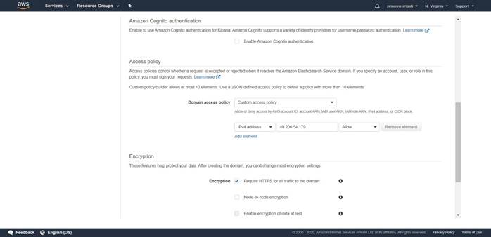
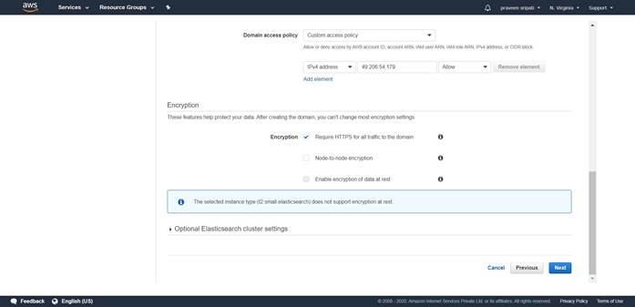
-- Review all the details from the Elastisearch domain and click on Confirm.
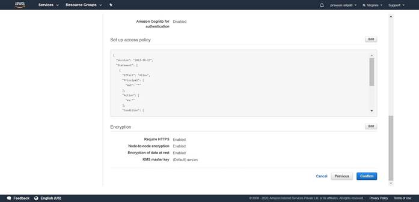
-- Initially the Elastisearch domain would be in a Loading status, it would take about 15 minutes for it to be ready and the status to become Active. Not down the Kibana HTTP URL, we would be using the same for visualizations later.
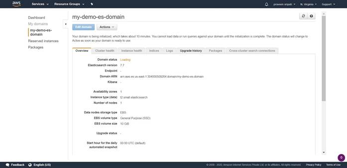
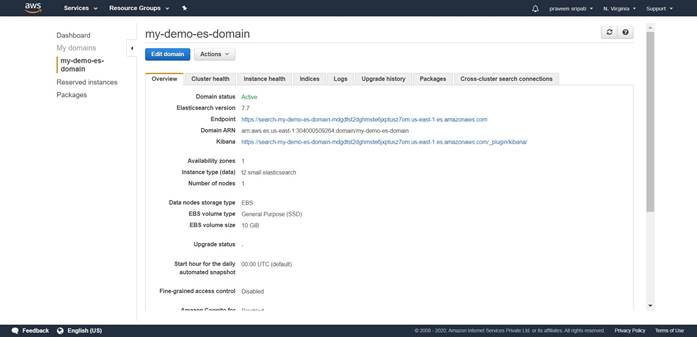
-- Go to the CloudWatch Management Console. Make sure the old Management Console is used, as the new Management Console is still under development. There would be an option to switch to the old Management Console at the top, if you are using the new one.
Navigate to the LogGroups. Go to Actions and “Create log group”. Enter the name as “my-vpc-flow-log-group” and click on “Create log group”.
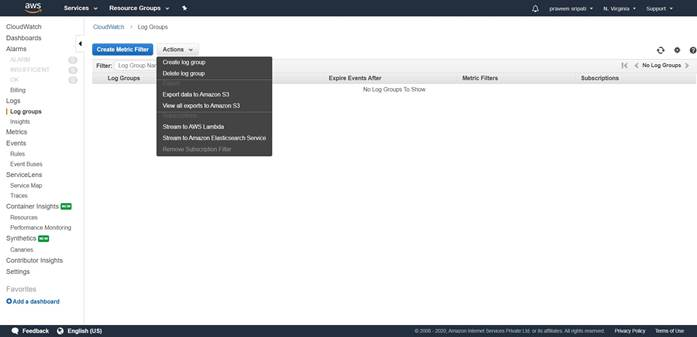
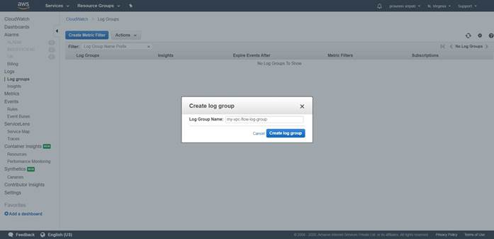
-- Click on the Log Group name and notice that are no Log Streams as no application has written any log files to it.
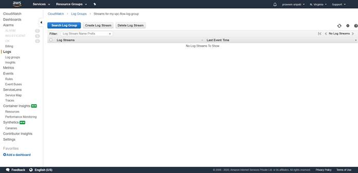
-- Go to the VPC Management Console and make sure “New VPC Experience” is turned off as the new one is still under active development. Make sure the VPC is selected and navigate to the “Flow Logs” tab and click on “Create flow log”.

-- Select the Filter, “Minimum aggregation interval” as 1 minute, the Destination as “Send to CloudWatch Logs”, the “Destination log group” which was created in the earlier step and for the format select “AWS default format”. Make sure all the properties are selected as below.
An IAM Role is required for streaming the VPC network metadata to the CloudWatch Logs. Click on “Set up Permissions”, which will open a new tab for creating the IAM Role.
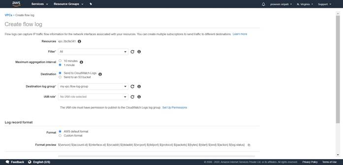
-- Enter the Role Name as “MyFlowLogsRole” and click on Allow.
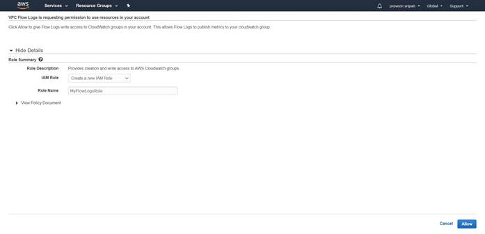
-- Navigating to the IAM Management Console, we notice an IAM Role as created below.
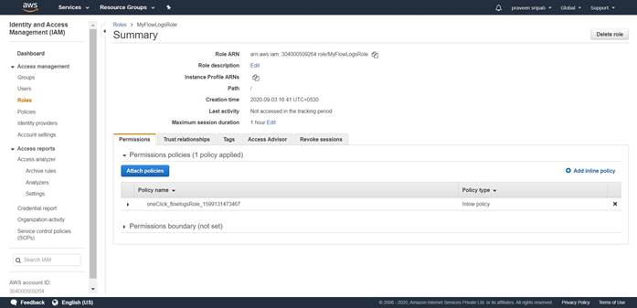
-- Navigate back to the VPC Management Console, we will notice that the IAM Role has been selected. Click on Create.
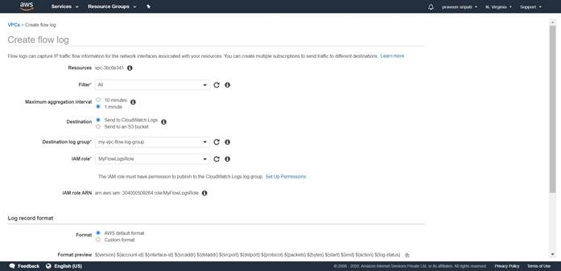
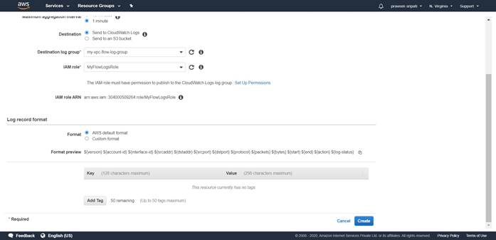
-- For the VPC a Flow Log will be created as shown below.
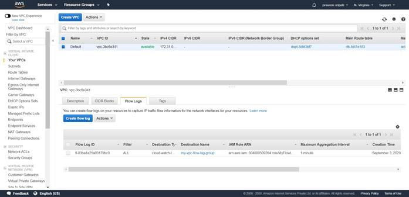
-- Create an instance (either Windows or Linux) and generate some traffic using the ping or the apt command for some time.
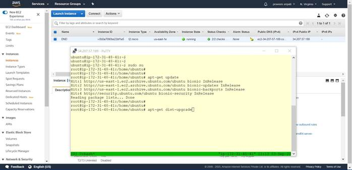
-- Go back to the CloudWatch Management Console and select the Log Group, there should be a Log Stream because the VPC is capturing the Network meta data. Click on the Log Stream.
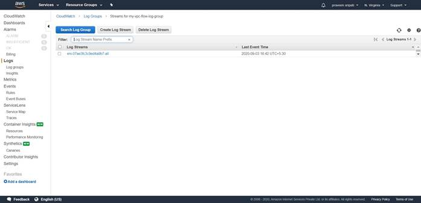
-- We should see some network metadata as shown below.
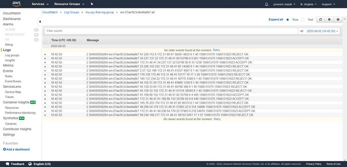
-- Go back to the Log Groups tab and select the Log Groups. Under Actions select “Stream to Amazon Elastisearch Service”.
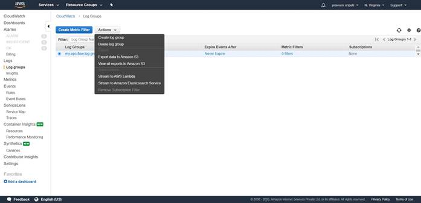
-- Select “This Account” and the Elastisearch Domain created earlier. In the dropdown of the “Lambda IAM Execution Role” select “Create new IAM Role”. A new tab for creating the IAM Role will appear.
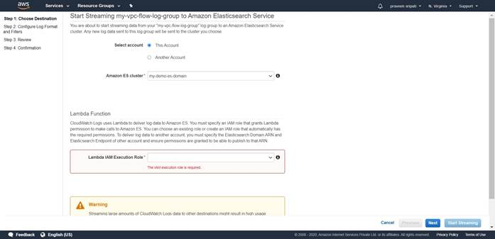
-- Enter the Role Name as “My_Lambda_Elastisearch_Execution” and click on Allow.
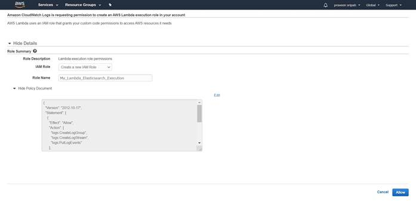
-- Go back to the CloudWatch Log Group screen and Lambda IAM Execution Role should be selected as below. Click on Next.
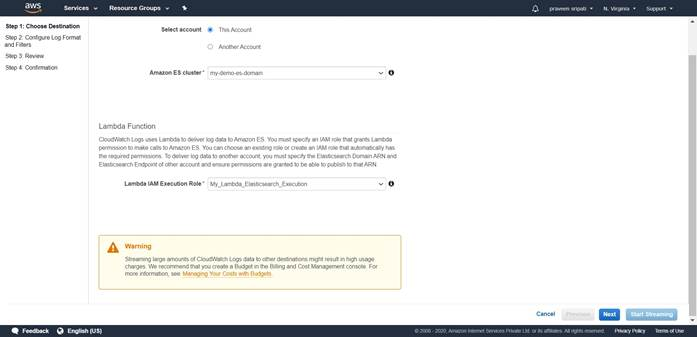
-- Select the Log Format as “Amazon VPC Flow Logs”. Click on Next.
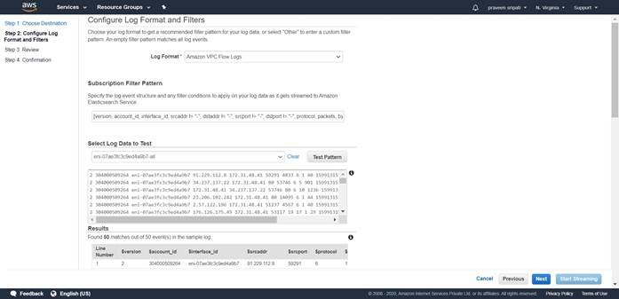
-- Review all the details and click on Next.
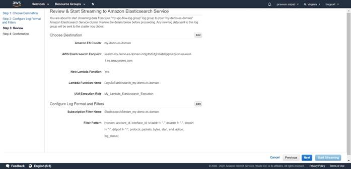
-- Click on “Start Streaming”.
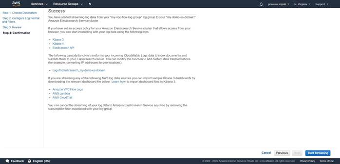
-- Now the Log Streams will be sent to Elastisearch domain via Lambda function.
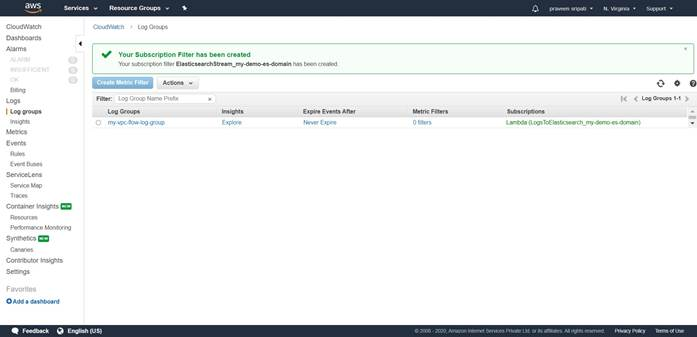
-- Go to the Lambda Management Console and notice that a Lambda function would be created. Expand the Lambda Function and notice the code in JS. This is FYI only and there is no need to change the Lambda Function.
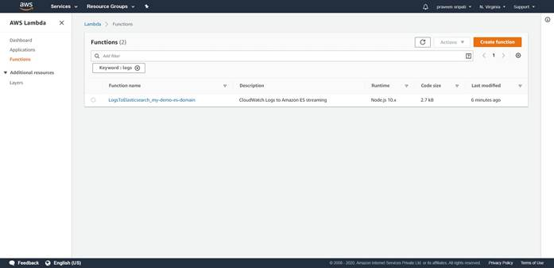
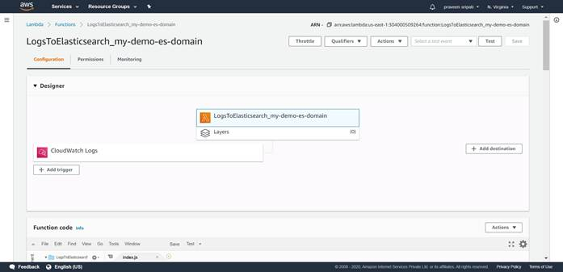
-- Go back to the Elastisearch Management Console and under the Indices tab there would be a new Index starting with “cwl-“ and the VPC network metadata would be captured here automatically. The Count should increase as we perform more network activity in the VPC.
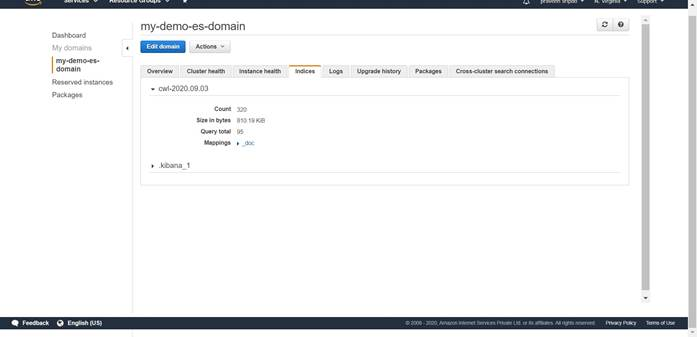
-- From the Elastisearch Console, get the Kibana HTTP URL and open the same. Click on “Explore on my own”.
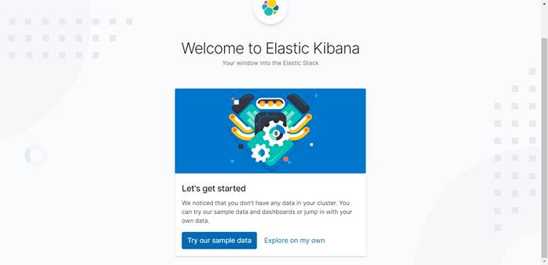
-- Click on the Visualization button on the left pane.
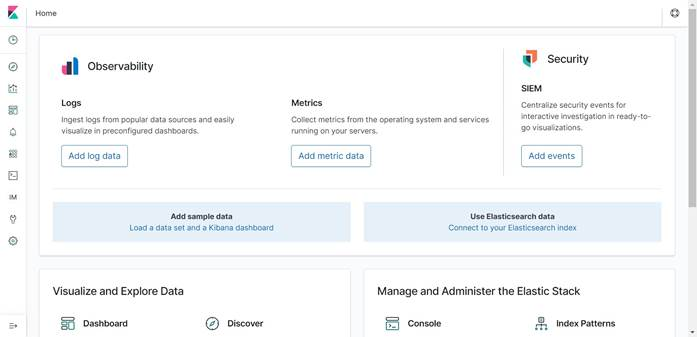
-- Under the Index pattern enter “cwl*” and it should say “Success! You index pattern matches 1 index.”. Click on “Next step”.
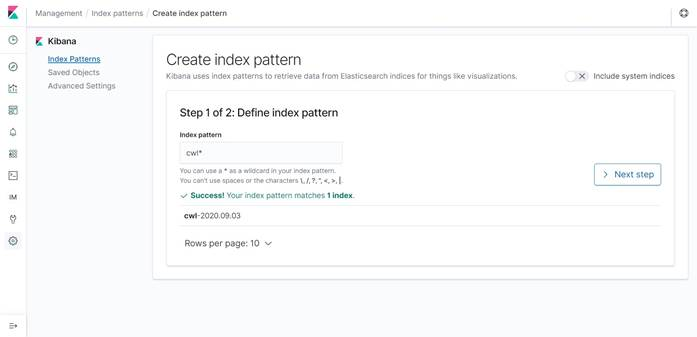
-- Select @timestamp in the “Time Filter field name” and click on “Create index pattern”.
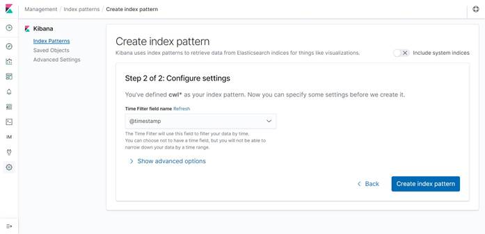
-- All the fields in the index should appear as shown below. Click on “Saved Objects”.
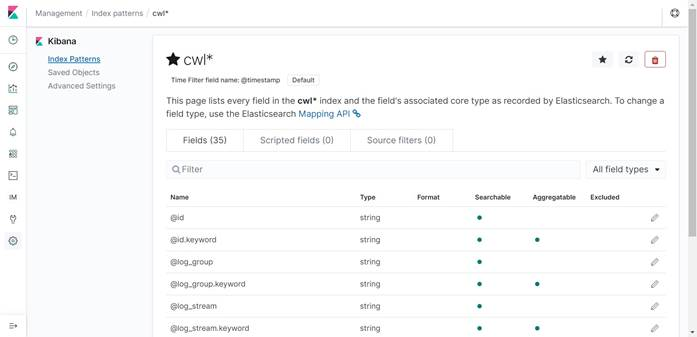
-- Click on Import.
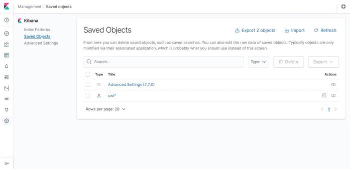
-- Download the below “my-kibana-charts.ndjson” onto your computer. This JSON has all the details to create a nice chart. Click on Import again and point to the downloaded file on the computer.
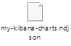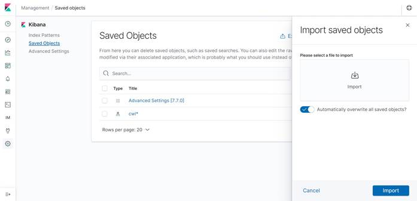
-- Click on Import.
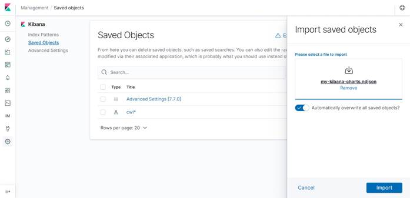
-- The import should be successful as shown below. Click on Done.
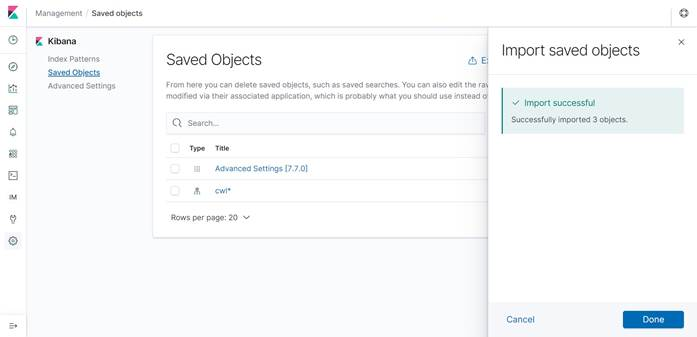
-- The “Accept-Reject-Traffic-Pie-Chart” and “Destination Port” Objects should appear as shown below. Click on ““Accept-Reject-Traffic-Pie-Chart”.
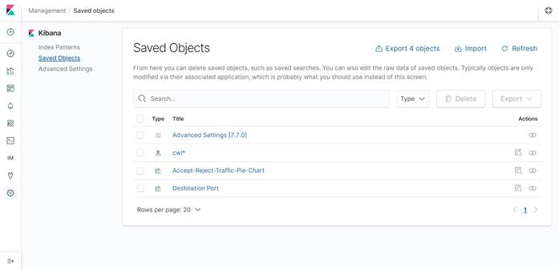
-- We should see similar chart. The inner doughnut represents the Accept/Reject traffic and the outer doughnut represents the corresponding port for the same. Hover the mouse over the pie chart to get more details. This chart is created by Kibana based on the network metadata from the VPC.
Notice that there are a large number of rejects when compared to accepts. These are blocked by the Security Group and the NACL (Network Access Control List) in the VPC. We can explore further if these are attempts by hacker by exploring the network metadata further and take some action.
Go back and click on “Destination Port”.
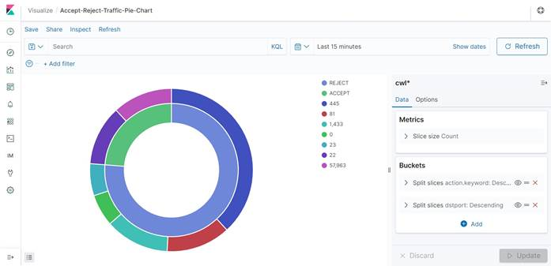
-- Here we see the number of packets sent to the different ports within the VPC. We can further do analysis of the port numbers and see if they are actually required or not for the application to work properly and block them in the Security Group and NACL appropriately.
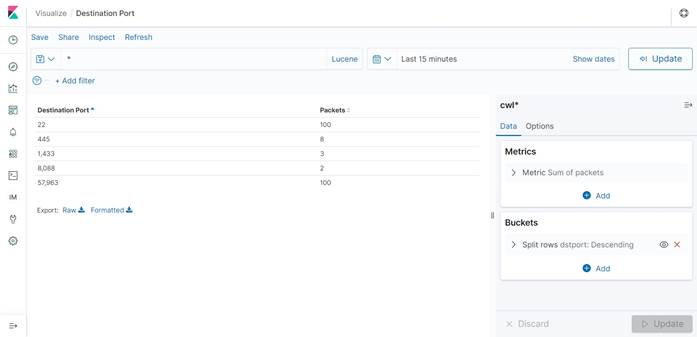
To conclude, we captured the VPC flow logs (network metadata) in Elastisearch and did some basic analytics to identify any threats in the network.